待正式上线后 ，少侠可以前往万宝阁找到 “仙贝通行证” ，购买到账后即可获得经验瓶装填资格和空经验瓶。
需要注意的是 ，通行证到期后 ，经验瓶会停止继续灌注 ，此外空经验瓶将直接进入经验瓶专属包裹 ，不会占用普通背包空间。
获得空经验瓶后 ，少侠可通过角色界面进入经验瓶功能 ，点击 “装载” 。
装载成功后 ，界面会显⽰当前经验和最大经验。经验瓶未灌满前无法卸下 ，需要等待经验积累完成。
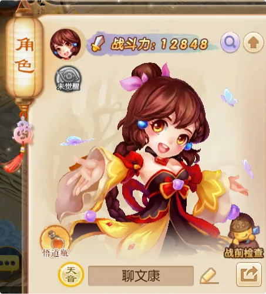
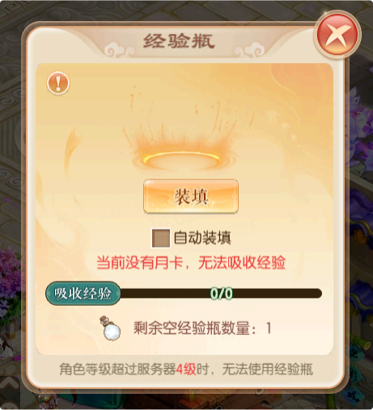
开启 “ 自动装填” 后 ， 当前经验瓶灌满时会自动卸下 ，并继续装载新的空经验瓶。
只要少侠拥有空经验瓶 ，并且专属包裹中有足够空间 ，即可持续积累经验。
少侠参与日常玩法并获得基础经验时 ，系统会将一定比例的基础经验扣除并装填到经验瓶中 ，具体比例以游戏内实际设置为准。
扣除比例为 10% 时 ，少侠获得 100 点基础经验 ，其中 90 点作为角色正常经验 ，并享受服务器加成等效果；剩余 10点装填进经验瓶 ，该部分经验不享受额外加成。
经验装填仅适用于日常玩法产出的基础经验 ，不包括主线任务、支线任务、经验道具、灵器封印、 回流活动、指引任务、青云志、经验雨等来源。
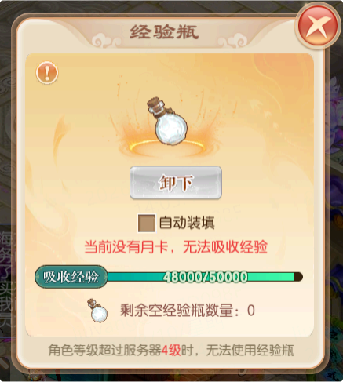
交易行采用 “ 买方发布订单、卖方主动满足” 的交易方式进行经验瓶的交易 ，少侠可以按个人需求发布订单。
买方可在交易行发布满经验瓶的求购需求 ，并设置求购数量和单价。发布订单后 ，系统会冻结对应的交易币。卖方选择合适的求购订单后 ，即可出售手中的满经验瓶。
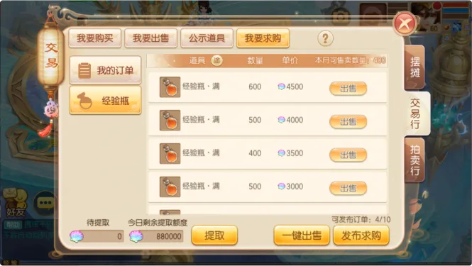
少侠进入交易行后 ，打开 “ 我要求购” 页签 ，选择需要求购的商品规格。
设置求购单价和数量后 ，系统会计算本次订单所需的交易币。确认发布后 ，对应交易币将被冻结 ，求购订单有效期为 24 小时。
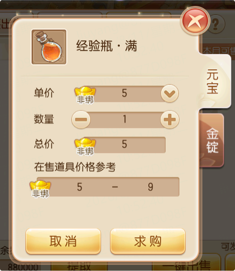
卖方进入商品求购列表后 ，可以查看不同价格的求购订单。
求购单价越高的订单优先显⽰； 相同价格下 ，发布时间更早的订单优先成交。选择订单后 ，可输入出售数量 ，也可以使用一键出售功能 ，快速满足符合条件的求购订单。
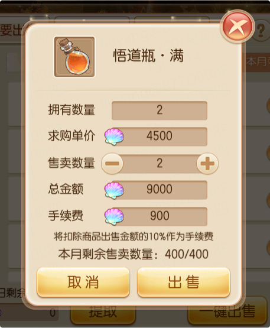
兜妹提醒：买方需要在订单详情中手动领取已成交的商品哦。
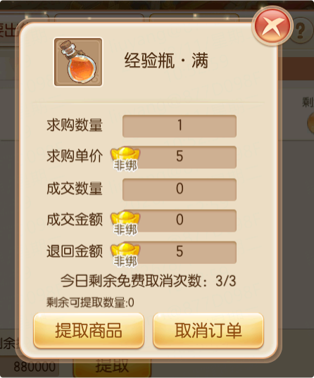
在 “ 我的订单” 中 ，少侠可以查看订单的求购数量、单价、成交数量和剩余时间。订单状态包括 “ 求购中” “ 已完成”和 “ 已过期” 。
订单取消或过期后 ，未成交部分对应的冻结交易币会返还给买方。
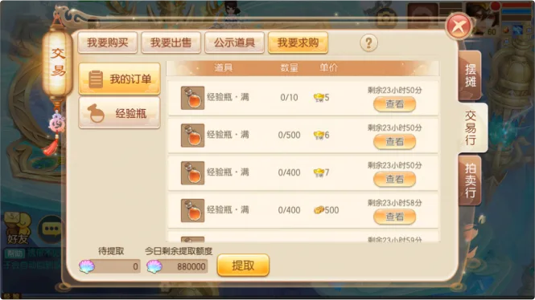
看懂流转方式后 ，接下来就是少侠最关心的使用部分：满经验瓶中的经验 ，可用于角色升级或境界提升。
使用满经验瓶后 ，少侠可获得其中储存的经验 ，并用于角色升级提升。
满经验瓶提供的角色经验可以享受服务器加成 ，并且不会受到服务器经验衰减影响。兜妹特别提醒 ，这一点在追赶成长进度时会比较关键哦。
当角色等级为99 级、服务器等级为 135 级时 ，从 99 级提升至 126 级可享受 5 倍服务器加成 ，共需 1,094,879,903点经验。正常升级约需90 天 ，使用经验瓶约需 3,650 个。
126 级之后 ，服务器加成会逐渐衰减。角色从 135 级提升至 139 级 ，共需 378,369,258 点经验。正常升级约需300天 ，使用经验瓶约需 1,260 个。
需要注意的是 ，经验瓶会受到每日使用次数、角色等级和服务器等级等规则限制。 当角色等级超过服务器等级一定范围后 ，将无法继续使用经验瓶。
举个例子： 服务器等级为90 级、角色等级达到 94 级时 ，少侠将无法使用经验瓶。
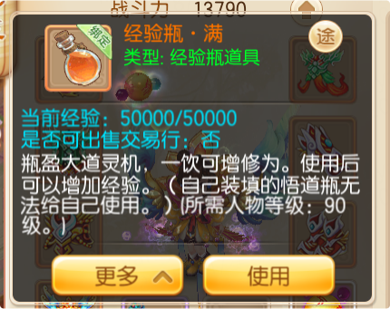
满经验瓶中的经验也可用于境界提升。少侠可根据当前成长需求 ，在角色经验与境界经验之间进行选择。
对于出售满经验瓶的少侠来说 ，成交后获得的交易币会进入结算流程 ，后续可用于兑换相关内容。
卖方成交后获得的交易币 ，会先进入待结算状态。满足结算条件后 ，即可提取为可用交易币。
每日可提取的交易币数量会受到相关规则限制 ，具体额度以游戏内显⽰为准。
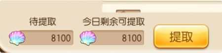
获得可用交易币后 ，少侠可前往积分商城兑换云梦集市兑换券及超值养成资源。
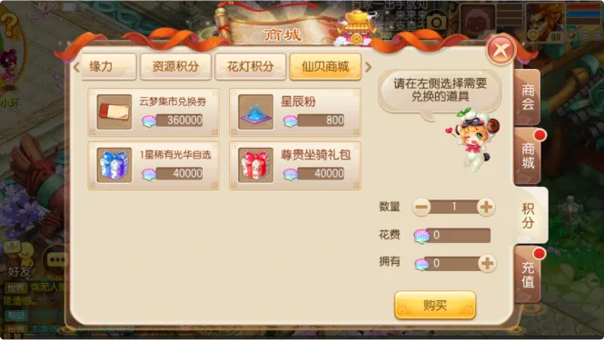
每月可通过仙贝商店获得最多 2 张云梦集市兑换券 ，用于兑换返场商城中的往期外显。
云梦集市每月更新 ，每种外显类型将更新 2 件可兑换内容。少侠记得按需查看兑换内容呀。
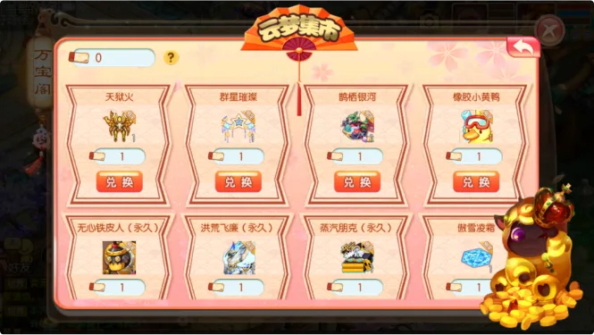